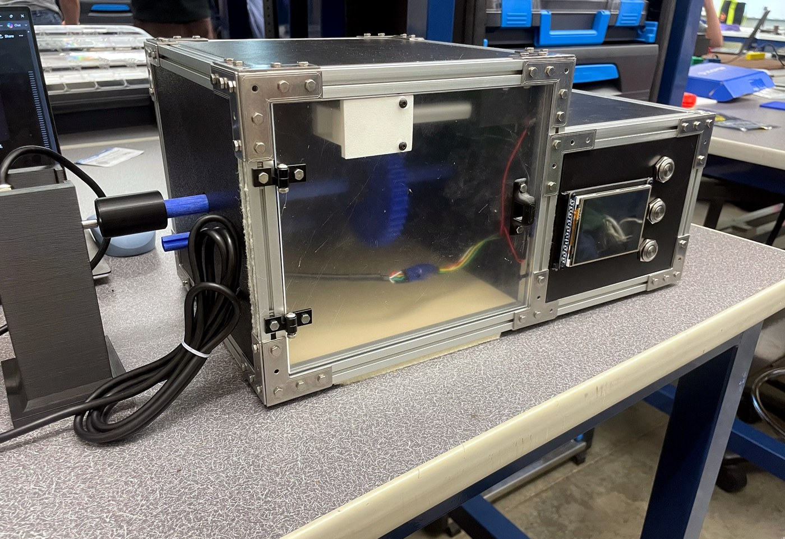

Project Summary
This project is a safety-interlocked motorized gearbox demonstration platform. An STM32F411CEUx controller supervises a motor driver, linear actuator lock, door/reed switch, TFT display, buttons, USB connection, and two quadrature encoder channels. The main software intent is a closed-loop PI output shaft speed controller wrapped inside safety logic and user feedback.
Control Intent
The user selects a desired output shaft RPM. The output encoder measures actual shaft speed and the firmware adjusts motor PWM through a PI controller.
Safety Intent
The gearbox only runs when the enclosure door switch indicates a closed condition. Lock/unlock actuator commands are blocked while the gearbox is running.
User Intent
Three buttons provide start/stop, lock/unlock, and speed selection. The display reports selected speed, measured shaft speeds, system state, and faults.

Deliverable Alignment
The documentation was built to address the repository/portfolio requirements: major hardware, motors/actuators, sensors, custom PCB, mechanical design, software implementation, main loop/state machine, coding style, mathematical modeling, sensor processing, repository setup, Doxyfile, and README.
| Rubric Topic | Where Addressed |
|---|---|
| Performance / Functionality | Control, safety, media, and future bring-up sections. |
| Features / Objectives / Challenges | Overview, hardware, electronics status, limitations, and next steps. |
| Memo / Documentation | This portfolio-style website plus the Doxygen-ready repository package. |
| Videos / Attachments | Media page includes prototype photos, CAD images, schematic PDFs, and demo video. |
| Firmware | Software and control pages document modular firmware, state machine, PI control, and drivers. |
System Features
- Closed-loop PI speed control of output shaft RPM.
- Input and output shaft encoder RPM measurement.
- Door/reed switch safety interlock.
- Actuator lock/unlock logic with run-state interlock.
- TFT display and three-button user interface.
- Custom STM32F411 controller PCB design with motor, actuator, USB, encoder, button, and TFT interfaces.